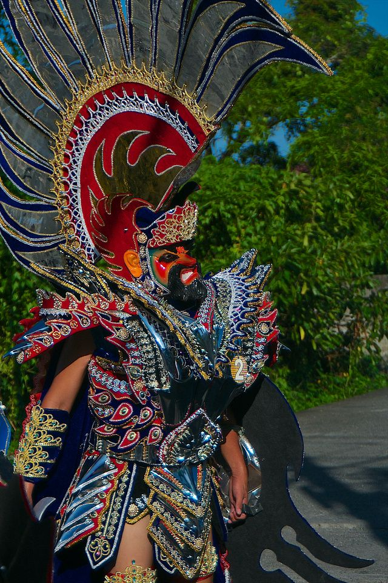
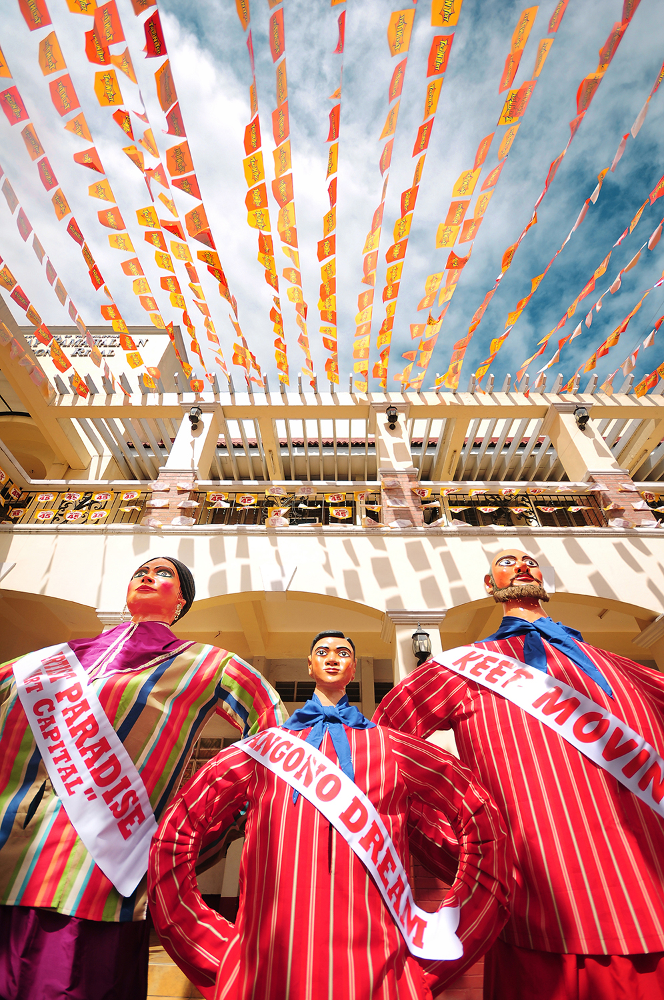
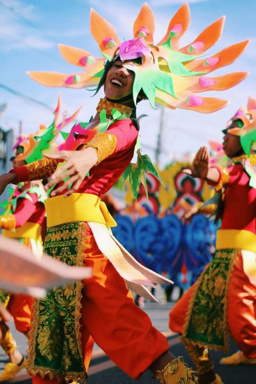

Moriones Festival
in Marinduque
in Marinduque
 Panagbenga Festival
Panagbenga Festival in Baguio City

Higantes Festival
in Angono, Rizal
in Angono, Rizal

Pahiyas Festival
in Lucban, Quezon
in Lucban, Quezon